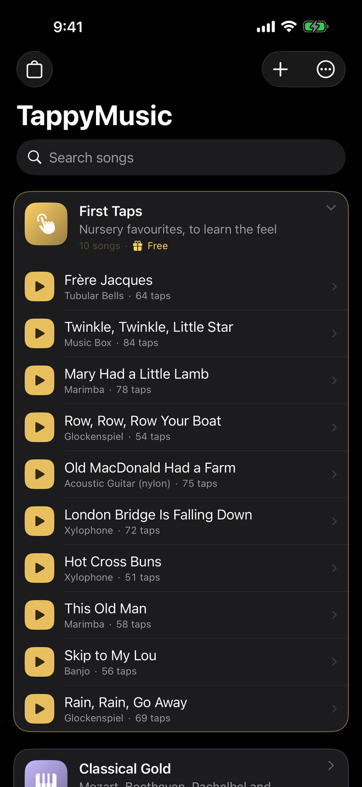
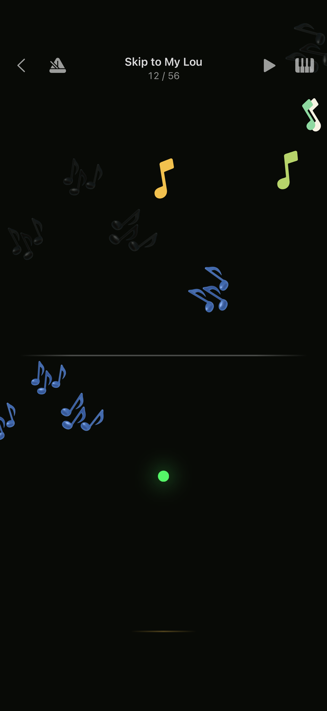
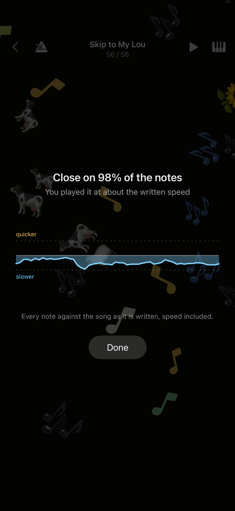
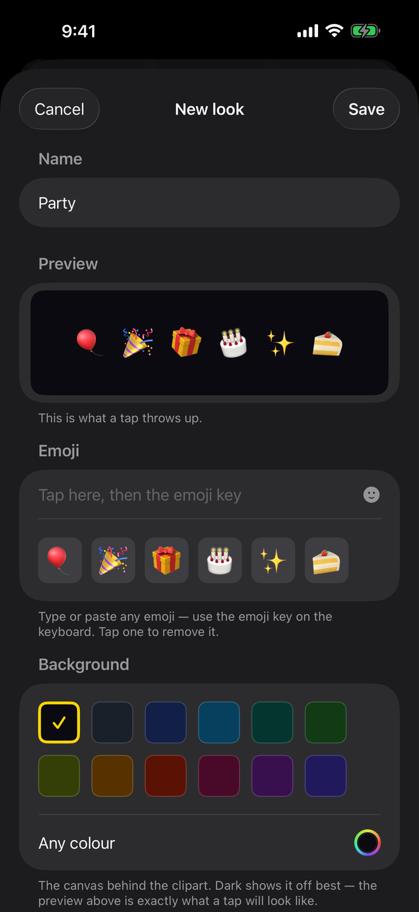

Для iPhone та iPad
Торкайся будь-де.
Все влучно.
Дайте дитині справжній інструмент — і перше, з чим вона зустрінеться, буде невдача. TappyMusic прибирає рівно одне: яка нота наступна, — і залишає все інше.



Як це грається
Торкніться будь-де на екрані, і залунає наступна нота мелодії. Швидко, повільно, зупинившись посередині й почавши знову: твір завжди звучить правильно, а ритм завжди належить дитині.
Немає клавіші, яку можна не влучити
Немає ні цілі, ні хибної ноти. Будь-де — правильно.
Двома руками, якщо хочеться
Верх екрана грає мелодію, низ — те саме нижче, наче ліва рука. Обидві половини разом — і те, і те.
Кожен дотик розквітає
Малюнки, які обрала сама пісня, злітають там, де впав палець, а гучніші ноти кидають їх більше.
Що всередині
137 мелодій у 15 наборах: дитячі пісні, колискові, класика, фолк і біля багаття, святкова музика, і по набору на кожну традицію. Усе — суспільне надбання, звучить через справжній семплер General MIDI на 30 інструментах.
Набір First Taps — десять улюблених дитячих — безкоштовний і повний. Кожен платний набір грає одну мелодію безкоштовно, тож ніщо не купується непочутим.
Навчитися грати як слід
Коли дитині замало самої свободи, є меню навчання. Нічого з цього не обов’язкове, і ніщо ніколи не показується як оцінка.
Слідкуй за м’ячиком
М’ячик підстрибує й приземляється точно тоді, коли час наступної ноти, падаючи під дією тяжіння: ритм видно ще до того, як він настане.
Послухати
Почуйте, як твір іде далі звідси — у повному чи вдвічі повільнішому темпі, фраза за фразою.
Побачити, як ви зіграли
Наприкінці — малюнок того, наскільки гра трималася написаного ритму. Малюнок, а не оцінка.
Зробіть його своїм
Імпортуйте власні пісні
Будь-який файл MIDI стає піснею, яку граєш дотиками, — через помічника, що витягає мелодію й дає її послухати на кожному кроці.
Створюйте власні кліпарти
Складіть вигляд із будь-яких емодзі телефона й дайте його будь-якій пісні.
TappyMusic Pro
Ці три речі й усі набори мелодій — за одну покупку, доступну всій сім’ї.

Шість емодзі — і ви вже щось створили
Введіть будь-які емодзі, які знає ваш телефон: попередній перегляд унизу покаже саме те, що злетить від дотику, намальоване тим самим механізмом, яким грає застосунок. Виберіть колір позаду й дайте цей вигляд будь-якій пісні.
Власні пісні та кліпарти — єдине, чого ніщо не завантажить повторно, тож застосунок записує їх у звичайний zip-архів, який можна тримати де завгодно.
Для батьків
Без реклами. Без підписок. Без облікових записів. Без аналітики, без стеження, і жодні дані не залишають пристрій — єдиний сервер, з яким говорить застосунок, це App Store. Він працює цілком без інтернету. Покупки одноразові та доступні всій сім’ї.
Застосунок говорить одинадцятьма мовами: українською, англійською, німецькою, французькою, іспанською, італійською, португальською, японською, корейською, грецькою та російською.
TappyMusic
Безкоштовне завантаження, з десятьма дитячими піснями назавжди. iPhone та iPad, одинадцять мов, без облікового запису.